Ember Studio
User Guide
Version 0.1.0
Ember Studio is a free, open-source program for making your own Pokémon game. You start from a copy of Pokémon FireRed (US) v1.1. From there you change whatever you want: the maps, the people in them, the story, the Pokémon, the trainers, the items, the text, the graphics and the music. The result is a new GBA game that plays on any emulator or flash cart.
You don't need to know programming, hex editing or assembly. Everything is done with forms, a map painter and blocks: little coloured cards that you stack to say what happens in the game ("say this", "give a Potion", "walk three steps left").
Tip: The pictures in this guide come from the example game Ember Quest, made with the wizard. Your screens will look the same, with your own names and Pokémon.
Ember Studio does not include any Nintendo game. You need your own copy of Pokémon FireRed (US) version 1.1, as a .gba file. The original file is never changed: your project stores only your changes. That means you can share a project, or a patch made from it, without sharing the game itself.
Ember Studio is a single file, EmberStudio.exe, so there is nothing to install. Download it from the project's Releases page on GitHub and put it in any folder, for example Documents\Ember Studio. Then double-click it.
The first time you run it, Windows SmartScreen may show a blue window saying the app is not recognised. This happens with new programs from small open-source projects, not because something is wrong.
The EXE is signed, and you can see the certificate in Properties → Digital Signatures. Windows only trusts a new signature after many people have downloaded the program. If you prefer, you can also build the EXE yourself from the source code (see Projects and sharing).
%LOCALAPPDATA%\EmberStudio\mgba.%LOCALAPPDATA%\EmberStudio. Your projects themselves live wherever you choose, usually in Documents.The button at the top right toggles between English and עברית. The whole interface switches immediately, and in Hebrew the layout runs right-to-left. The language of the interface has nothing to do with the language of your game: you can make an English game with the Hebrew interface, and the other way round.
If you are a developer, or you don't want to run an unsigned EXE:
python editor/ember/server.py # opens the editor in your browser at http://localhost:8765
python editor/ember/app.py # the same window as the EXE (pip install pywebview pillow)
The quickest way to start is the New game wizard. It asks a few questions and then creates a complete, playable project.
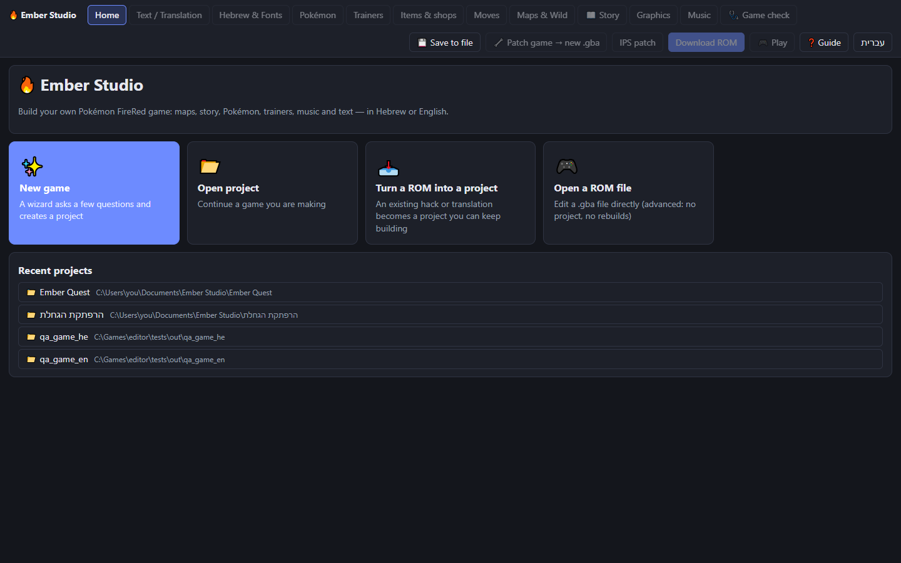
On the home screen you have four choices:
| Button | What it does |
|---|---|
| ✨ New game | Asks a few questions and creates a project. Start here. |
| 📂 Open project | Opens a project folder you made before. |
| 📥 Turn a ROM into a project | Takes an existing hack or translation (a .gba file) and turns it into a project, so you can keep working on it. |
| 🎮 Open a ROM file | Quick editing of a .gba file directly, with no project and no building. Good for small fixes. |
Your recent projects are listed below the buttons. Click one to open it.
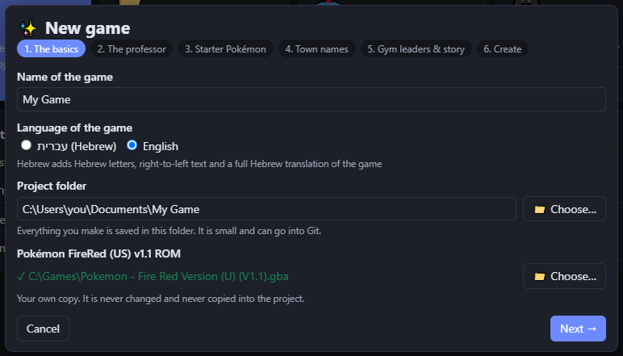
Choose the professor's name. All of the professor's lines are updated to use the new name.
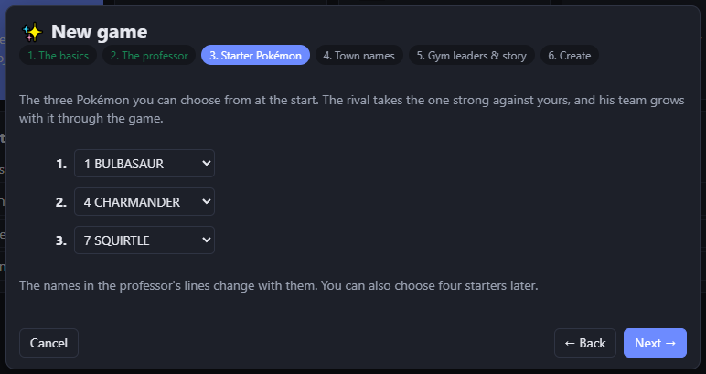
Choose the three Pokémon the player can pick at the start. You can choose any of the first 386 Pokémon. Ember Studio updates everything that depends on the choice:
Rename the towns and cities. The new names appear on signs, on the town map, in the "you arrived at…" pop-ups and in all dialogue.
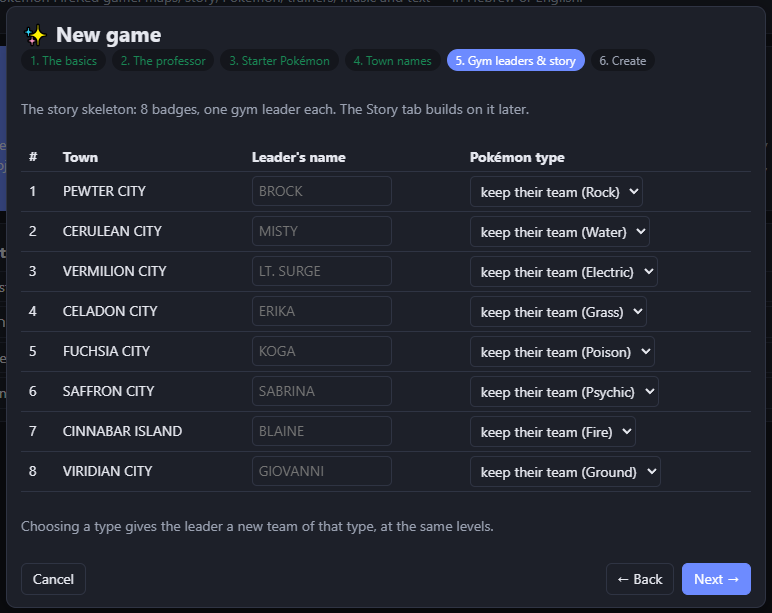
For each of the eight gyms, choose the leader's name and the type of their Pokémon. The leader's whole team changes to Pokémon of that type, at the right levels.
The wizard also starts your story: one chapter for each badge, each with a step "Beat the gym leader". You fill in the rest later in the Story tab.
Ember Studio creates the project folder and builds the game. You land in the editor with your game open. Press ▶ Play (or Build & play) to try it straight away.
Tip: Every answer in the wizard can be changed later in the editor, so don't worry about getting everything right the first time.
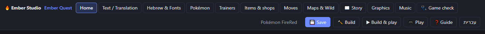
At the top of the window:
| Tab | What you edit there |
|---|---|
| Home | Open, create or import a project. |
| Text / Translation | All the text in the game. |
| Hebrew & Fonts | Hebrew letters, the font and right-to-left settings. |
| Pokémon | Stats, types, moves, evolutions, starters and gift Pokémon. |
| Trainers | Every trainer and gym leader and their teams. |
| Items & shops | Items, prices, descriptions and what every shop sells. |
| Moves | Moves, TMs and HMs, and move tutors. |
| Maps & Wild | The map editor, the world view, wild Pokémon, and blocks & tiles. |
| 📖 Story | The storyline, step by step. |
| Graphics | Pokémon pictures, characters from a picture, and the title screen. |
| Music | Which song plays where, and importing music. |
| 🩺 Game check | Looks for problems in the whole game. |
out/game.gba.out/game.gba.The Maps & Wild tab has three views at the top: Map editor, World view (all connected maps together) and Blocks & tiles.
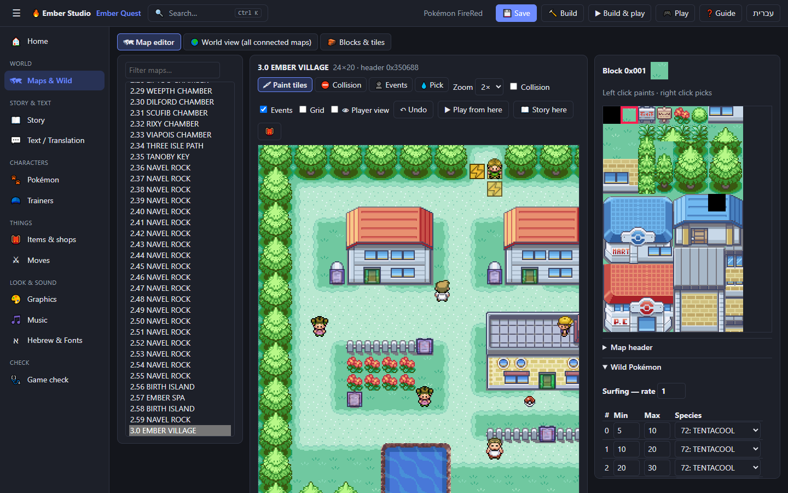
The list on the side shows every map in the game, by number and name, for example 3.0 Pallet Town. Type in the box above the list to filter it. The numbers are group.map: group 3 is the outdoor towns and routes, and the other groups are mostly buildings and caves.
Some useful shortcuts:
The Collision, Events and Grid checkboxes show or hide those layers over the map.
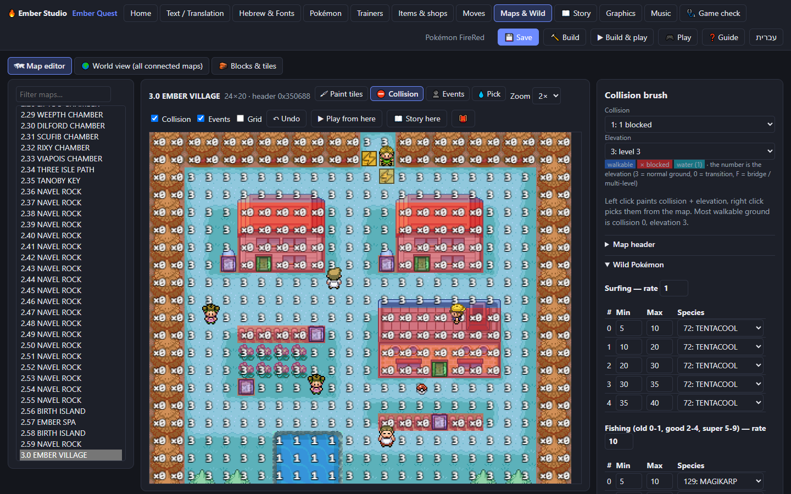
In ⛔ Collision mode every square shows whether the player can walk on it:
Choose a brush from the Collision brush panel and paint over the map. If the player walks through walls or gets stuck on an empty floor, the collision is wrong. Fix it here.
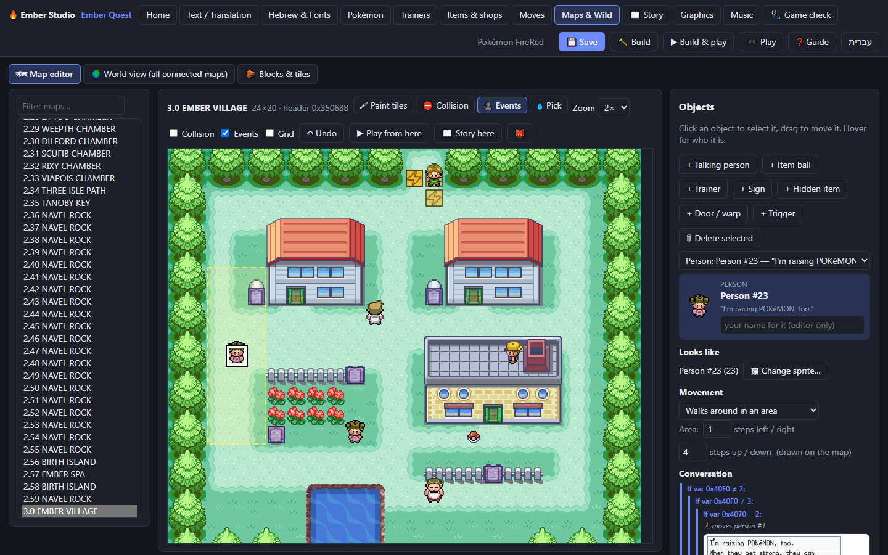
In 👤 Events mode you see everything that does something on the map:
Some useful actions:
The next chapter goes into objects in detail.
Under Map settings in the side panel you can change the map's name (as shown in the game), its music, its weather and its map type (town, route, indoors, cave…).
The ▶ Play from here button lets you test any spot in the game:
This is the fastest way to check a change. The test team can be changed with the 🎒 button.
The World view shows all the maps that connect to each other, laid out the way they are in the game. Here you can see the shape of your region, move maps relative to each other, and paint across map edges.
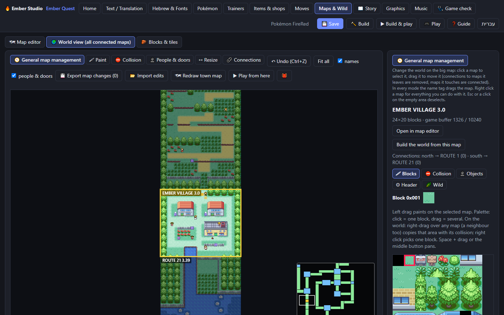
world_edits.json) and load them into another copy of the game.If two maps overlap, or their connections disagree, a warning appears above the map. Fix it before you share the game.
In 👤 People & doors you can follow a door to the map it leads to, and come back:
It works the same way as in the map editor:
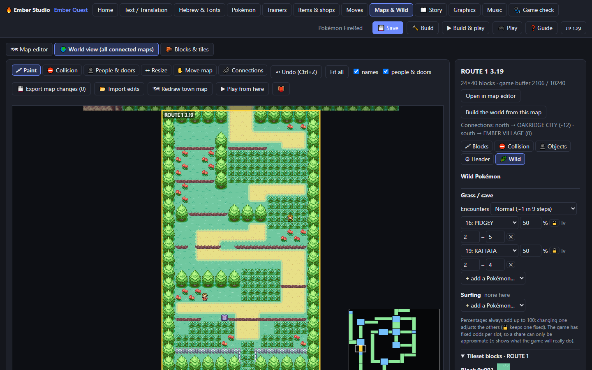
Choose a map and open the 🌿 Wild tab in the side panel. For each kind of encounter (grass / cave, surfing, fishing, rock smash) you can:
The real game picks encounters from fixed slots. The chances shown are therefore rounded to the nearest possible values (≈).
Maps are made of blocks of 16×16 pixels. Each block is made of four 8×8 tiles. The blocks of a map come from its tileset: the town tileset, the cave tileset and so on.
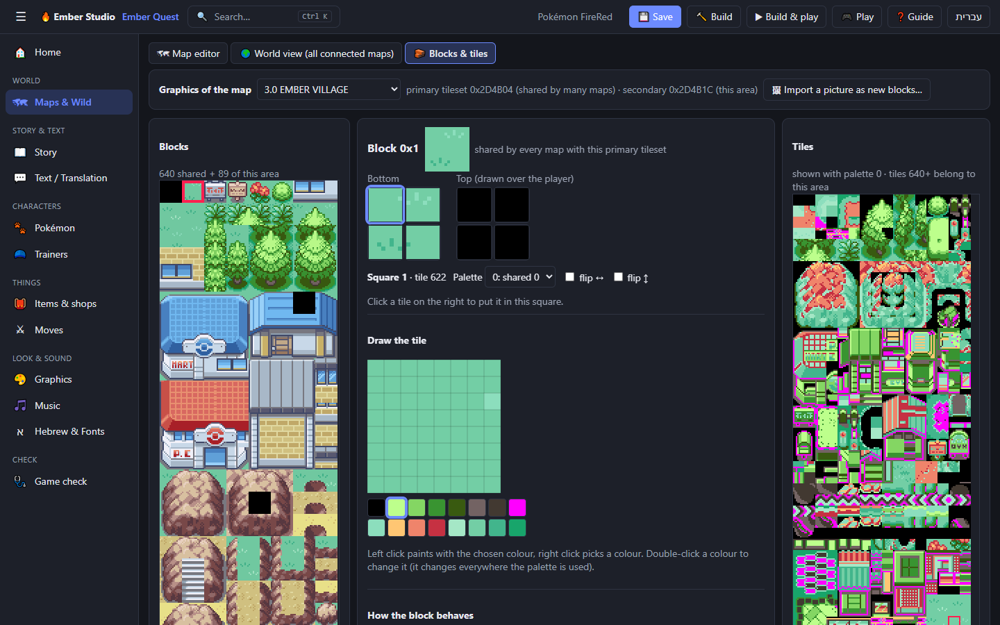
In Blocks & tiles you can:
This is the easy way to add something new to your maps, such as a statue, a flag, a building or a sign.
Tip: Pictures with few colours and clear outlines look best. Every tileset has a limited number of colours, and Ember Studio chooses the closest ones it has.
Click an object in 👤 Events mode to open its settings.
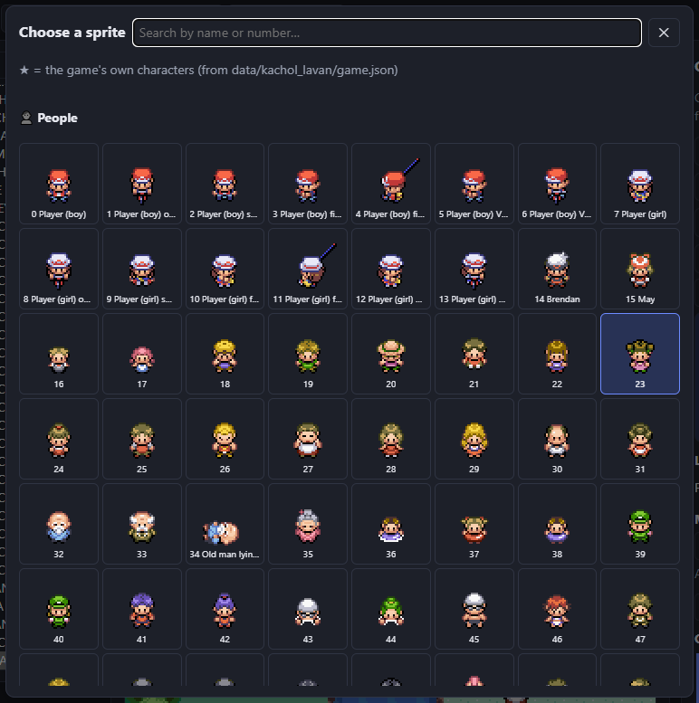
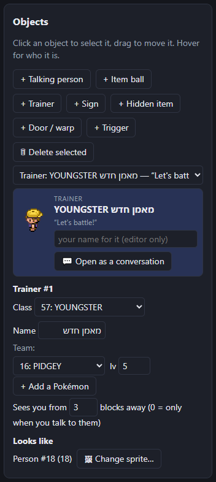
A trainer is a person who battles the player when they meet:
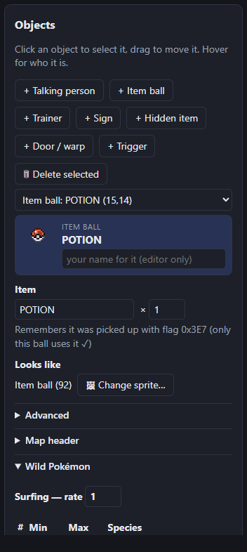
A script is what happens when the player talks to someone, reads a sign or steps on a trigger. In Ember Studio you write scripts with blocks. You stack them from top to bottom, and the game runs them in that order.
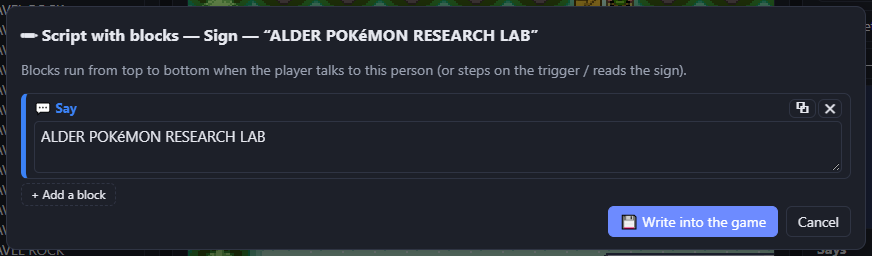
To edit a script:
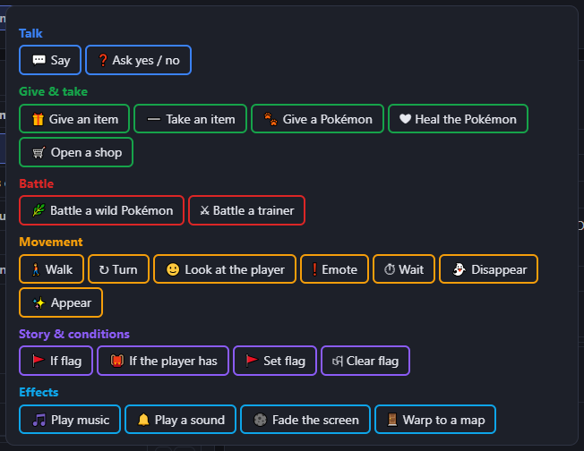
| Group | Block | What it does |
|---|---|---|
| Talk | 💬 Say | Shows a message. Press Enter in the text for a new line. |
| ❓ Ask yes / no | Asks a question. You put different blocks under yes and under no. | |
| Give & take | 🎁 Give an item | Gives the player an item (and a quantity). |
| ➖ Take an item | Takes an item away. | |
| 🐾 Give a Pokémon | Gives a Pokémon at a level, with an optional message. | |
| ❤ Heal the Pokémon | Heals the whole team, like a Pokémon Center. | |
| 🛒 Open a shop | Opens a shop with the items you choose. | |
| Battle | 🌿 Battle a wild Pokémon | Starts a battle with a wild Pokémon. |
| ⚔ Battle a trainer | Battles a trainer, with intro and defeat text. | |
| Movement | 🚶 Walk | Moves the player or a person, step by step, at normal, slow or fast speed. |
| ↻ Turn | Turns someone in a direction. | |
| 🙂 Look at the player | The person turns to face the player. | |
| ❗ Emote | Shows ❗, ❓ or ♥ above someone's head. | |
| ⏱ Wait | Waits a number of seconds. | |
| 👻 Disappear / ✨ Appear | Hides or shows a person. This is remembered. | |
| Story & conditions | 🚩 If flag | Runs different blocks depending on a flag. |
| 🎒 If the player has | Runs different blocks depending on whether the player has an item. | |
| 🚩 Set flag / 🏳 Clear flag | Remembers (or forgets) that something happened. | |
| Effects | 🎵 Play music | Changes the music. |
| 🔔 Play a sound | Plays a sound effect. | |
| 🌑 Fade the screen | Fades to black, or back in. | |
| 🚪 Warp to a map | Sends the player to another map. |
What is a flag? A flag is an on/off switch that the game remembers in the save file. For example "the player already got the Potion from Mom". With flags, people say something new the second time you talk to them, and items don't come back. The Story tab takes care of most flags for you.
Fields like who walks, who or where have a 👆 Pick on the map button (Pick the person on the map, Pick the spot on the map). Click it, then click on the map. You never need to type coordinates.
In the Story tab, ▶ Play the preview shows a quick animation of the walking and messages in a scene, right in the editor. It's a sketch: the real result is in the game. Use ▶ Play from here or Test from this step to see that.
The 📖 Story tab is where you write the plot of your game: what the player must do, in what order, and what people say along the way. You don't write scripts and flags by hand. You make a list of steps, and Ember Studio builds everything else.
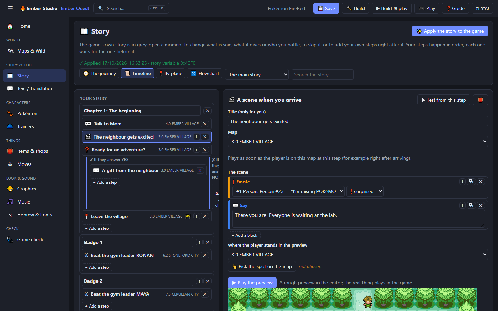
Click a step to edit it. Its settings open on the right.
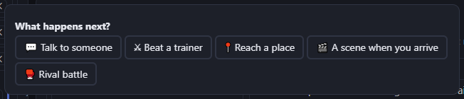
| Step | What happens |
|---|---|
| 💬 Talk to someone | The player talks to a person, and the blocks you write run. Example: "Mom gives you running shoes". |
| ⚔ Beat a trainer | The player must beat a trainer or gym leader. You can add blocks that run right after the win. |
| 📍 Reach a place | Something happens when the player steps on a spot. Example: the professor stops you at the edge of town. |
| 🎬 A scene when you arrive | A scene runs as soon as the player arrives on a map, for example a cutscene in a new town. |
| ❓ A choice (yes / no) | Someone asks a question, and the story splits into two paths. |
| 🥊 Rival battle | A battle with your rival, whose team depends on the starter the player chose. |
For most steps you fill in:
Each step has a Test from this step button (▶). It starts the game right before that step, with the story stage already set. You see exactly what a player sees at that point, without playing the whole game up to it.
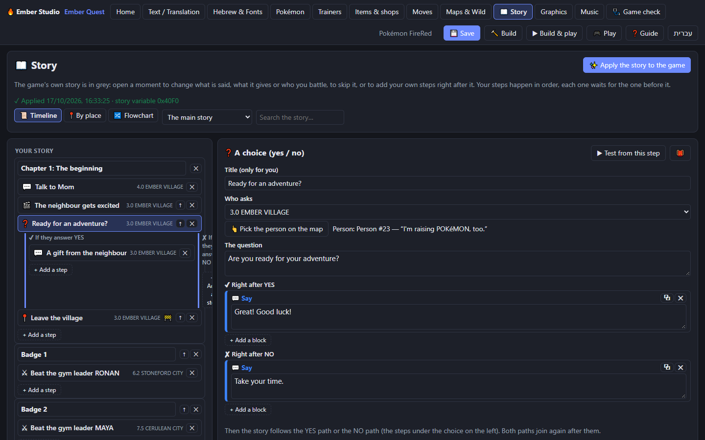
A choice step asks a yes/no question. Under it there are two columns:
Each path can have its own steps, its own scenes and even its own ending. After the paths, the story continues together.
Often the player must not go somewhere yet: "You can't leave town without a Pokémon!". In a Reach a place step or a Talk step you can add a guard: a person who stands in the way until the step is done, and then disappears. Ember Studio takes care of hiding them at the right moment.
Under Characters: lines that change with the story, a person can say different lines at different points in the story. For example, a villager says "I heard about a strange Pokémon…" at the start, and "You beat the gym leader!" after the first badge. You add a line and choose after "…", the step after which it starts.
Press ✨ Apply the story to the game. Ember Studio writes all the scripts, triggers and scenes into the game. You can change the story and apply it again at any time: the old version is removed first, so nothing is left behind.
Tip: Work in small pieces. Write one or two steps, apply, and try them with Test from this step.
The Story tab also shows the story that is already in the game: Oak stopping you at the tall grass, choosing your first Pokémon, the rival battle, the parcel, every gym leader, Team Rocket, the Elite Four… Ember Studio finds it by following every script in the game, so it works for FireRed and for hacks built on it. FireRed's own moments have proper names. In a hack, whatever still matches keeps its name, and anything new is named after what it does.
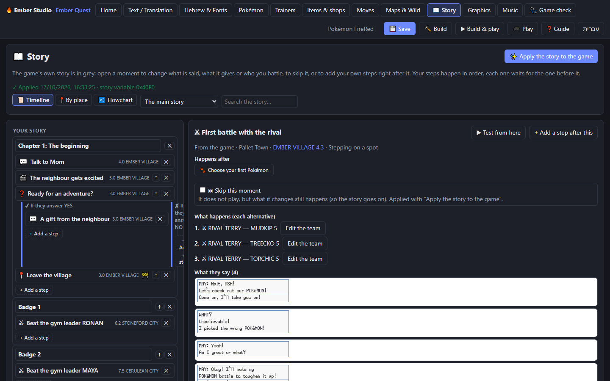
The moments of the game are the grey cards under The story of the game, in chapters by place: Pallet Town, Viridian City, Pewter City and so on. Your own steps are in colour.
The buttons at the top switch between three views:
The menu next to them switches between The main story and Everything that happens, which adds side events such as gifts, fishing rods and Team Rocket grunts. The search box finds a moment by name or by place.
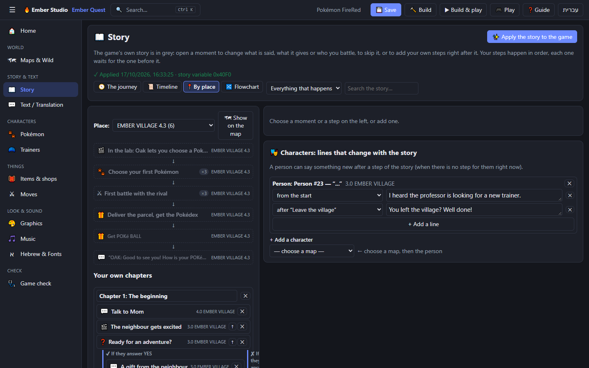
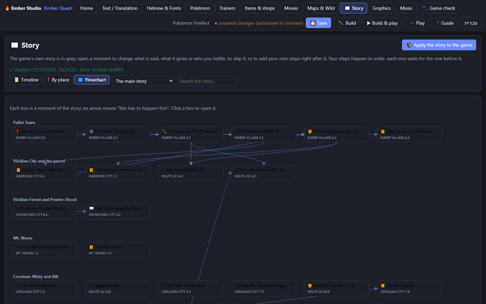
Click a moment to open it on the right:
Changes to lines, Pokémon, items and teams go straight into the game, like any other edit.
Tick ⏭ Skip this moment to cut a moment out, for example "Oak stops you at the tall grass". It no longer plays, but what it changes still happens, so the rest of the story does not get stuck. Its gifts are given quietly. The skip goes into the game when you press ✨ Apply the story to the game, and you can untick it at any time.
The + next to a moment (or + Add a step after this) starts a chapter of your own right after it. Use it for something like a new scene between choosing the starter and the rival battle:
Now the rival battle does not start until your steps are done. Each such chapter has its own story variable, so a chapter after the rival does not wait for one after Brock.
Tip: Undo is exact. Untick a skip or delete your chapter, put the story into the game again, and the game's scripts are back byte for byte.
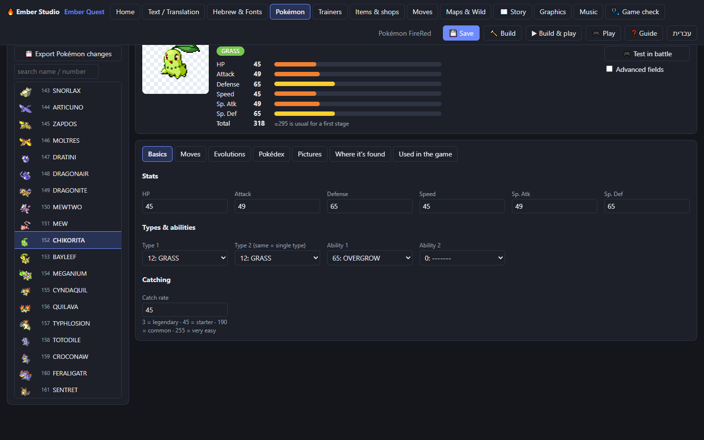
Choose a Pokémon from the list (you can search by name or number). You can change:
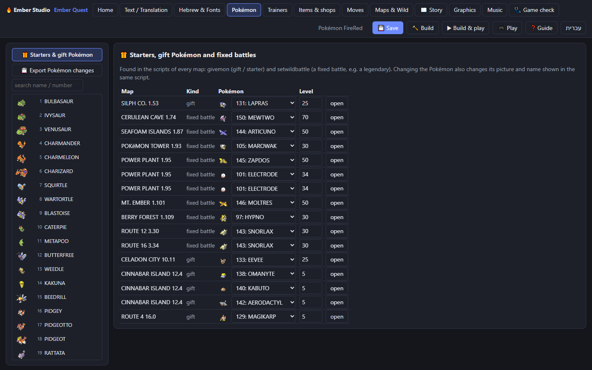
🎁 Starters & gift Pokémon lists every place in the game where the player gets a Pokémon or meets a fixed one:
Change the Pokémon or the level, and Ember Studio changes the script and the picture shown with it.
🐉 Legendaries in the world lists every Pokémon that stands on a map and is battled once: Mewtwo, the legendary birds, Lugia, Ho-Oh, Deoxys, Snorlax, the Electrode in the Power Plant, and the ones you added. Choose one to see its card:
➕ New legendary puts a new one on any map: choose the Pokémon, the level, the map and the spot. The player talks to it, hears its cry and battles it; afterwards it is gone, caught or not. If the Pokémon has no sprite of its own, one is made from its picture.
💾 Export Pokémon changes saves your Pokémon edits as a file you can share or import into another project.
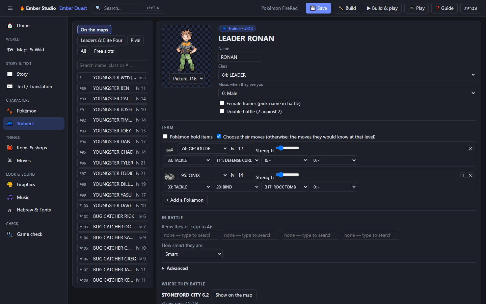
On the left is the list of all trainers. You can filter it to show only gym leaders and rivals, by map, or by class. For each trainer you can change:
The 📈 Difficulty along the story chart shows every trainer as a point: how strong their strongest Pokémon is, from the start of the game to the end. Gym leaders are gold, rivals are blue, and trainers who are much stronger or weaker than the trainers around them are red.
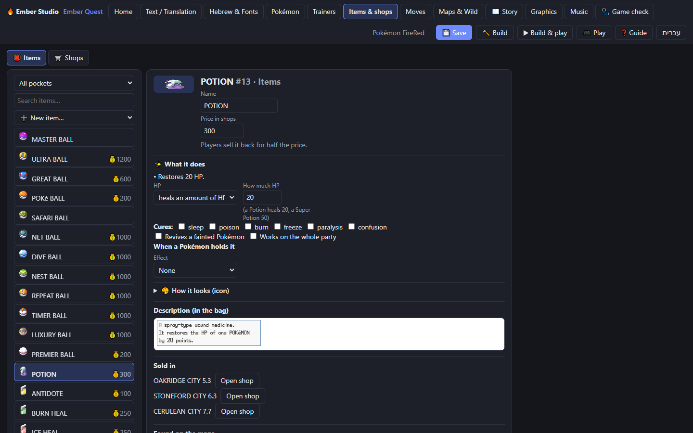
For each item:
At the top of the card, a few short sentences say what the item does, for example Restores 20 HP or Catch chance ×2. Below them are fields for what you can change:
The raw numbers are still under Advanced.
Open How it looks (icon) to draw the 24×24 icon:
➕ New item… at the top of the list makes a new item in one of the game's unused slots (named ????????). Choose what it is like: heals HP (like Potion), cures status, revives, restores PP, raises a stat for good, raises a stat in battle, an evolution stone, a held item, a repel, or something to sell. The new item copies that item's behaviour, effect and icon. Then give it a name, an icon and a description, and put it in a shop or on a map.
New Poké Balls and new berries are not possible: the game recognises them by their number.
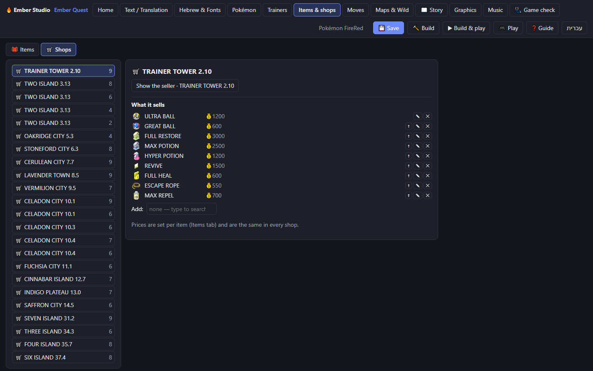
The Shops view lists every shop in the game: each Poké Mart counter and each special shop. Choose one to change what it sells, add or remove items, and change the order.
You can also create a new shop anywhere with the 🛒 Open a shop block.
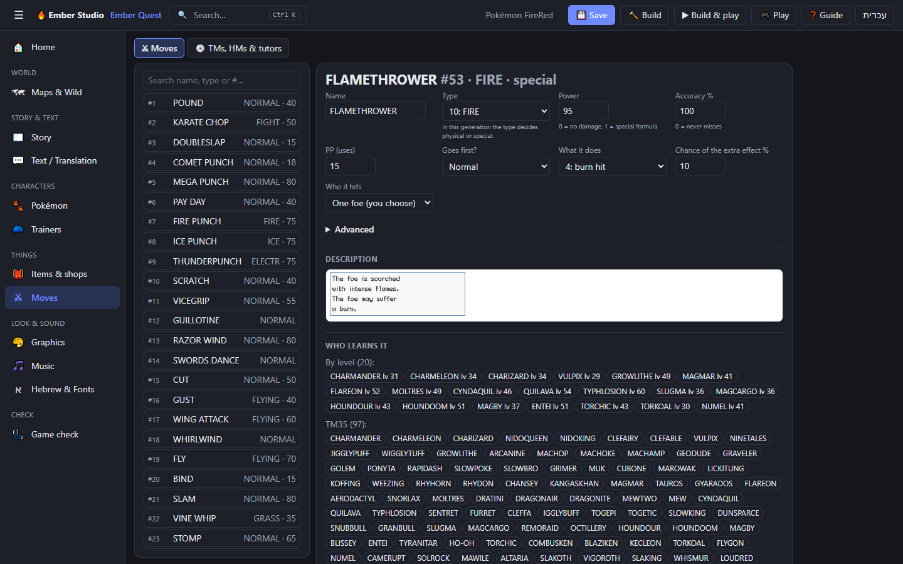
For each move:
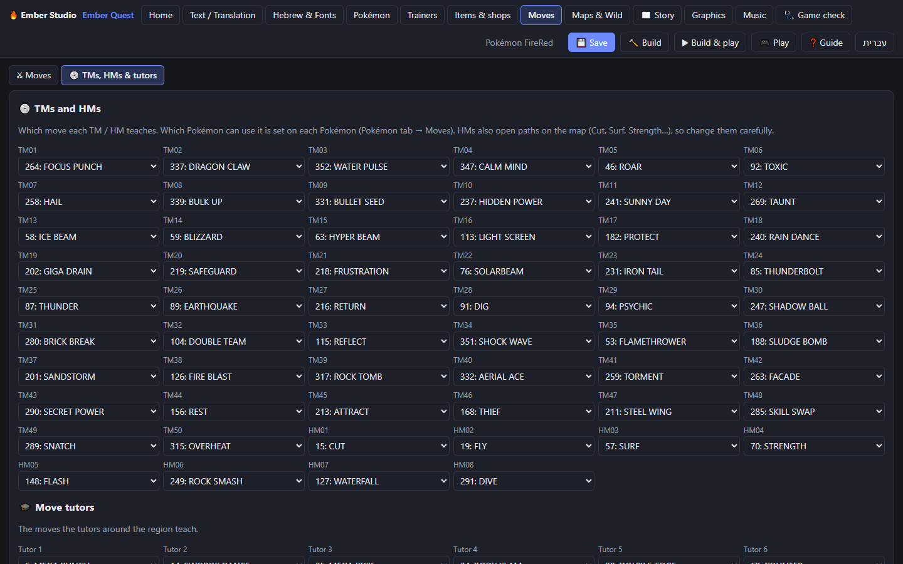
Which Pokémon can learn each TM is set in the Pokémon tab.
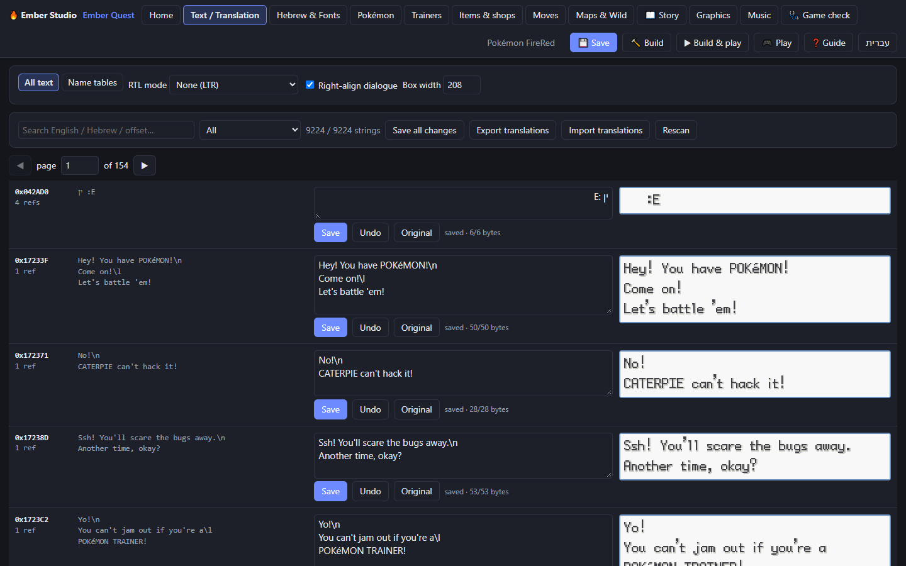
The Text / Translation tab shows every piece of text in the game: dialogue, signs, menus and names. More than 9,000 strings.
Ember Studio comes with a full Hebrew translation of FireRed (more than 7,000 lines). It does not contain the original English text, which belongs to Nintendo: each line carries only a short fingerprint (a hash) of the English line, and Ember Studio compares it with the text in your own ROM. A line that does not match your ROM is skipped.
A line that is too wide for the message box is shown in red. Break it with a new line, or make it shorter. The Game check also finds these lines.
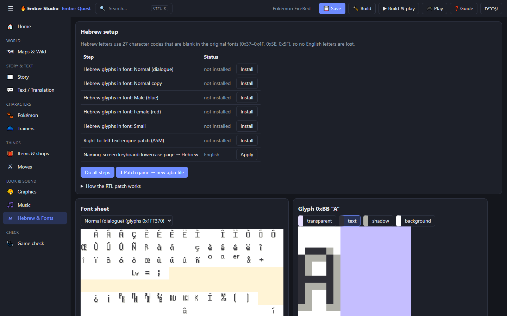
When the game language is Hebrew, Ember Studio:
The font sheet shows all the letters. You can redraw any letter pixel by pixel, for example to make the Hebrew letters match your style.
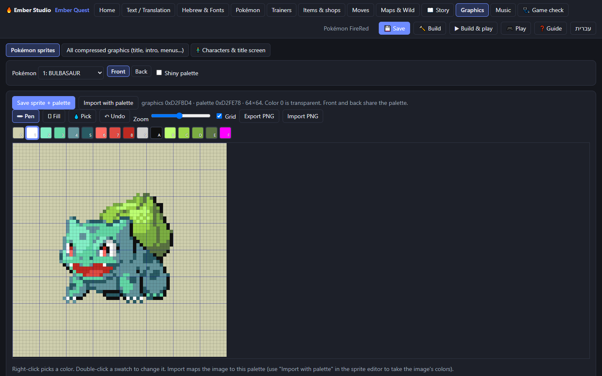
The Graphics tab has three parts:
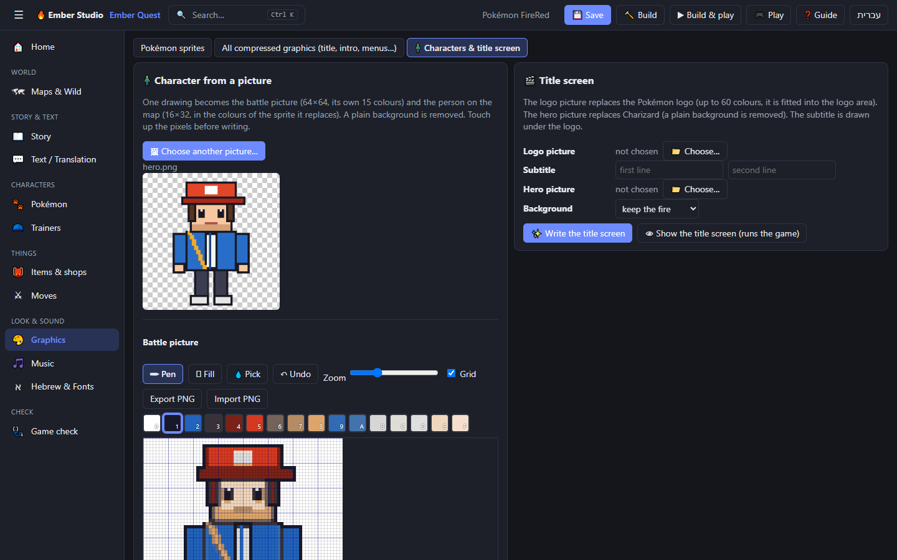
Make a new character, for example a new hero, from one picture:
Under 🎬 Title screen:
Press ✨ Write the title screen. 👁 Show the title screen runs the game in the background and shows you the result.
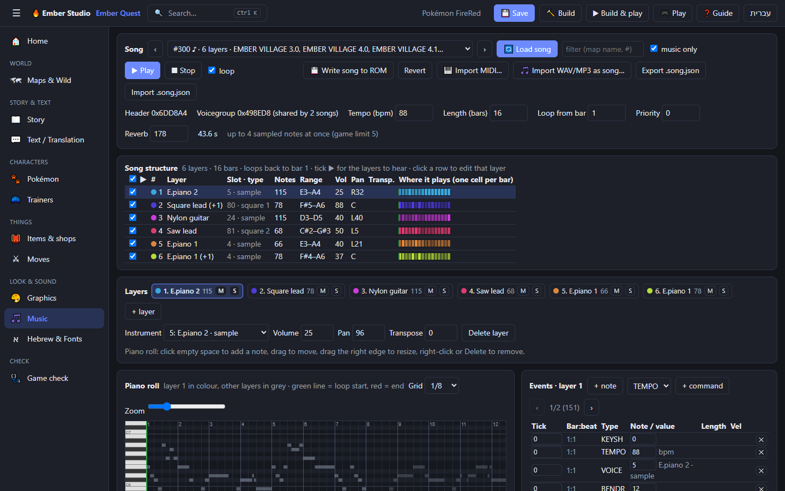
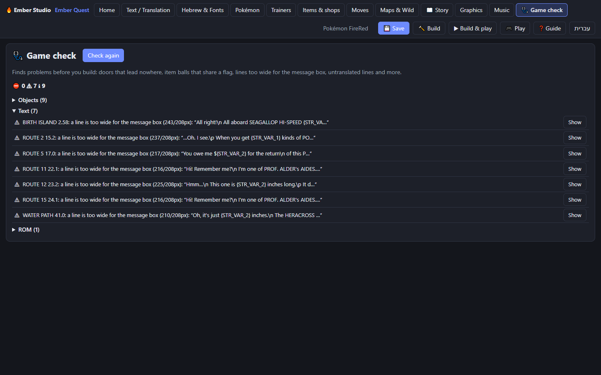
Before sharing your game, open 🩺 Game check. It goes through the whole game and lists problems by category:
| Problem | Why it matters |
|---|---|
| A map that can't be loaded | The game would crash there. |
| A door that leads to a map that doesn't exist, or to a door number the map doesn't have | The player gets stuck or the game crashes. |
| An object outside the map | Often intended (someone who walks in during a scene), so this is only a note. |
| An item ball with no flag, or two balls sharing a flag | The item comes back every time, or picking one hides the other. |
| The same trainer used twice | Beating one counts for both. |
| A line too wide for the message box | The text gets cut off. |
| A line still in English (in a Hebrew game) | Something was left untranslated. |
| A gym leader weaker than the one before | The difficulty goes backwards. |
| Almost no free space left in the ROM | New scripts and pictures may not fit. |
Each problem has a Show button that takes you to the right place. Press Check again after fixing things.
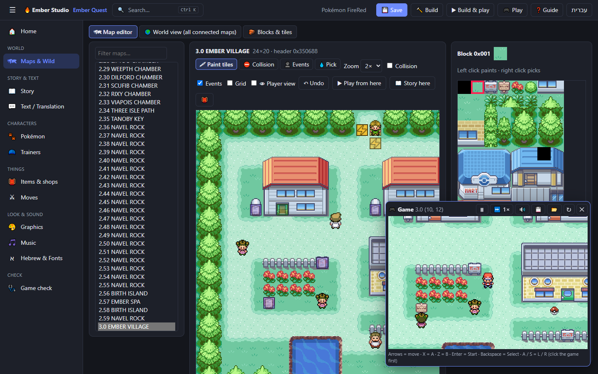
Ember Studio has the mGBA emulator built in. It opens in a window inside the editor.
| Button | Where the game starts |
|---|---|
| 🎮 Play | From the beginning, as the game is right now. |
| ▶ Build & play | Builds out/game.gba, then plays it from the beginning. |
| ▶ Play from here (map editor or world view) | On the spot you click, with a test team. |
| ▶ Test from this step (story) | Right before that step of the story, with the story stage set. |
| Keyboard | GBA |
|---|---|
| Arrow keys | D-pad |
| X | A |
| Z | B |
| Enter | Start |
| Backspace | Select |
| A / S | L / R |
Click the game picture first so it gets the keys.
▶ Play from here and Test from this step give the player a test team, so you can battle right away. Change it with the 🎒 button: choose Pokémon and levels.
Tip: The test only changes a copy of the game in memory. Your project is not touched.
My Game/
project.json name, language, base ROM, build steps
rom/patch.bin your changes to the ROM (small)
data/*.json the story, scripts, test team, Pokémon edits, map moves (readable)
out/game.gba the built game (not saved in Git)
README.md, .gitignore
out/ is small and readable, which makes it perfect for Git: you can see what changed and go back to any version.cd "My Game"
git init
git add .
git commit -m "First version"
The .gitignore that Ember Studio creates already leaves out out/ and save files. You can put the project on GitHub and work on it with friends. Each person needs their own ROM.
You must not share the ROM itself (out/game.gba), because it contains Nintendo's game. Share one of these instead:
out/game.gba with a free tool such as Floating IPS (Flips). Players apply it to their own ROM with the same tool. (When you edit a ROM file directly, without a project, the IPS file button in the top bar makes the patch for you.)📥 Turn a ROM into a project takes a finished hack or translation and makes a project from it:
.gba file.rom/patch.bin.From then on, you work on it like any other project.
A project can run its own build steps: Python scripts that run during the build and change the game further. The example game Kachol-Lavan uses one for its title screen and graphics. Steps are listed in project.json. Ember Studio runs them only when their files change, so builds stay fast.
Windows says the app is not recognised. Click More info → Run anyway. See Installing.
"This is not FireRed (US) v1.1". Ember Studio only works with that version: game code BPRE, revision 1. Other versions (v1.0, European, Japanese) have the data in different places.
The emulator window stays black. Wait a few seconds: the first start copies the emulator. If it stays black, close the window with ✕ and press Play again.
▶ Play from here does nothing. In the world view, first click a map to select it. The button is grey until a map is selected.
I changed the story, but nothing changed in the game. Press ✨ Apply the story to the game after changing steps, then test again.
The game crashes when entering a door. Run the 🩺 Game check. It finds doors that lead nowhere.
The text is cut off. The line is too wide. Break it into two lines. The Text tab shows too-wide lines in red.
I want to undo everything.
If you use Git, go back to an older commit. If not, the project's rom/patch.bin is your work: keep copies of the folder from time to time.
Where are my settings?
In %LOCALAPPDATA%\EmberStudio. Delete that folder to reset Ember Studio. Your projects are not there, so they are safe.
This guide was made from the program itself: all the pictures are taken automatically from Ember Studio. Corrections and translations are welcome on GitHub.